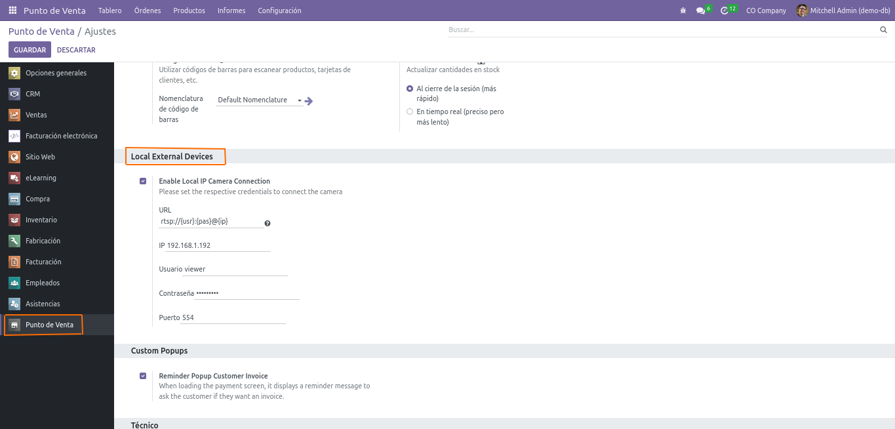

The Odoo module enables users to create connectors for communicating with Telegram groups. Users can configure the module to send alerts to specified Telegram groups or users based on actions and events in Odoo.
Configuration can be accessed through Telegram Alerts > Config, where users can specify their Telegram access token and manage the list of user IDs or group IDs to receive alerts.
